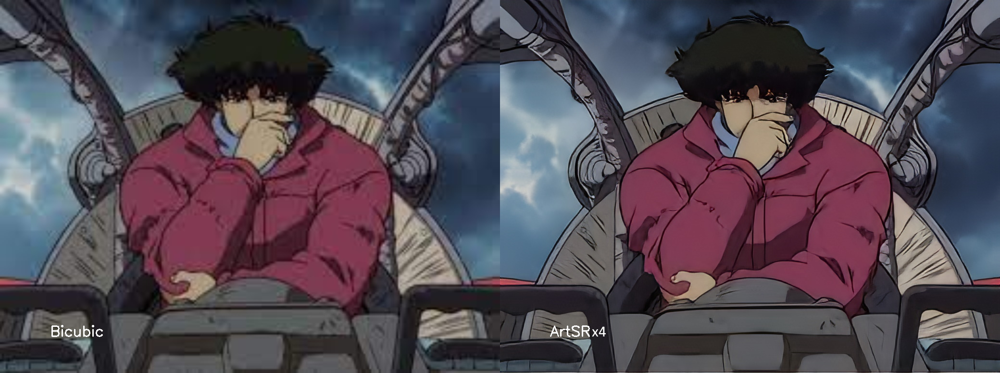
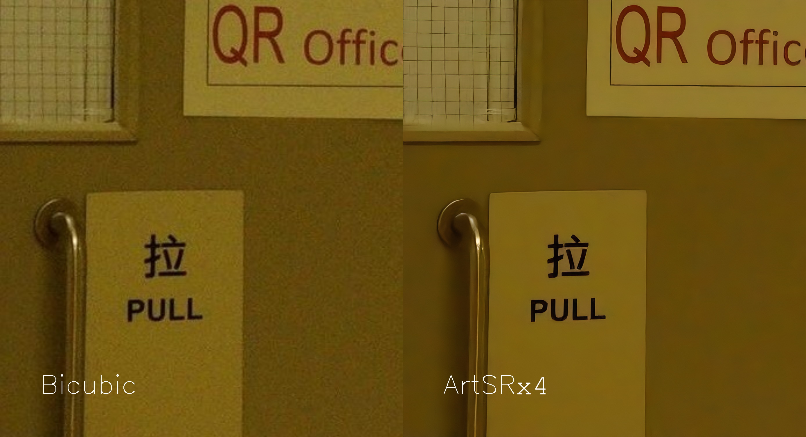
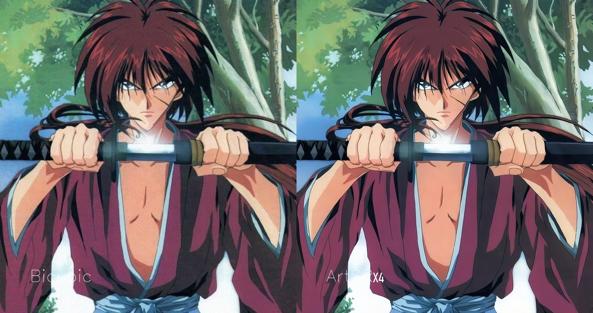

SuperResolution for Clear Images
Super Resolution for noisy, resized and compressed photos. Additionally the model is good to enlarge 2D Animation. Individual method for one of best GAN methods at 2022 year.



SuperResolution for Bad Images
Super Resolution for clear, photorealistic images. Based on the same GAN, but the train method was fully changed.